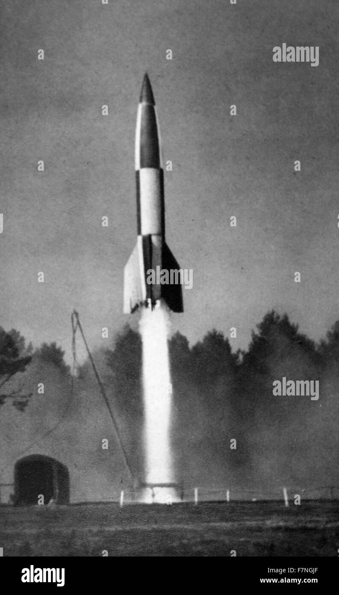

Rockets
About rockets
 The V-2 rocket was the world's first long-range ballistic missile and liquid-fueled rocket, developed by Nazi Germany during World War II as the "Aggregat 4 (A4)" but nicknamed "Vergeltungswaffe Zwei (Vengeance Weapon Two)" by propaganda. It was an advanced technological achievement that could fly at speeds greater than sound and was used against Allied targets like London, though it had limited strategic value. The V-2's technology and engineering later became the foundation for modern ballistic missiles and space launch vehicles.
The V-2 rocket was the world's first long-range ballistic missile and liquid-fueled rocket, developed by Nazi Germany during World War II as the "Aggregat 4 (A4)" but nicknamed "Vergeltungswaffe Zwei (Vengeance Weapon Two)" by propaganda. It was an advanced technological achievement that could fly at speeds greater than sound and was used against Allied targets like London, though it had limited strategic value. The V-2's technology and engineering later became the foundation for modern ballistic missiles and space launch vehicles.